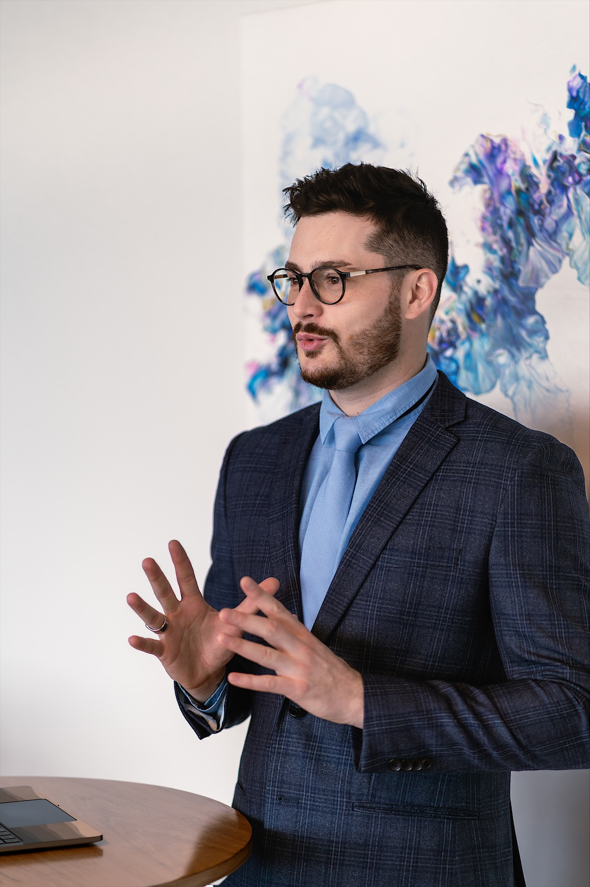
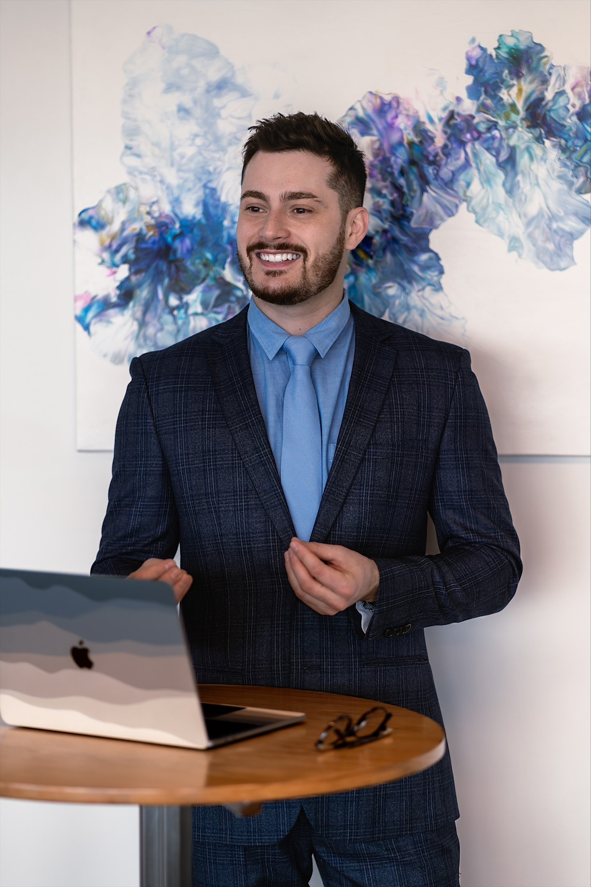
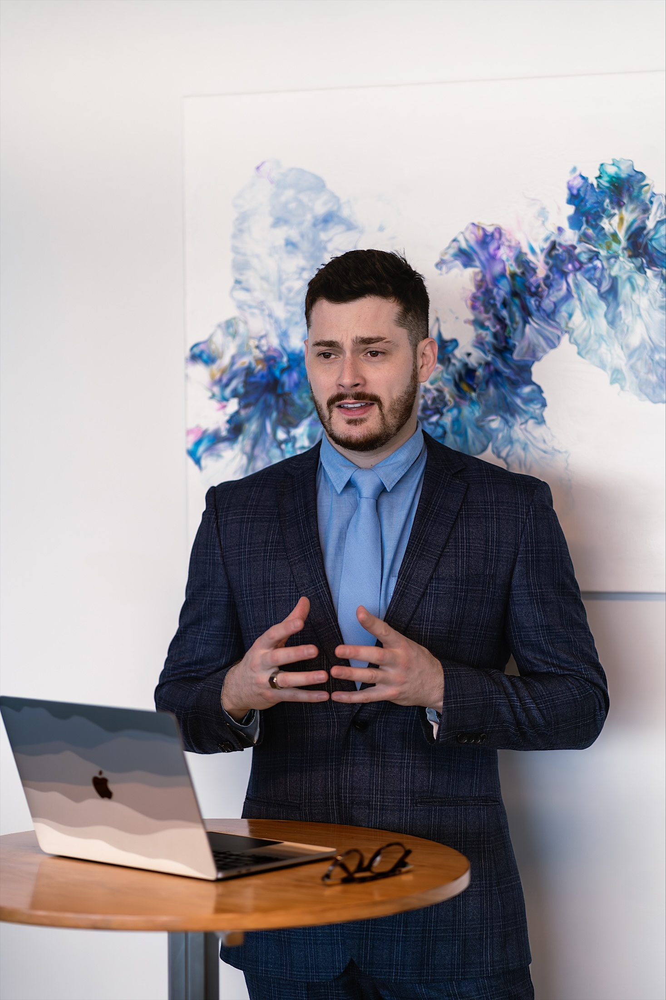

Now playing
Co-Creating Ethical AI: What Role Do We Play?
REKH Conference 2025
Keynotes, Talks & Panels
On stage
Watch now





Founder · Keynote Speaker · AI Specialist
Dr. André dos Santos
Helping leaders turn AI innovation into strategic advantage, safely, responsibly, and in plain language.
Founder of Xplain AI✦AI Safety & Governance✦Keynote Speaker✦PhD, Computer Science✦Industrial Engineer✦
Meet André
With deep expertise in Generative AI, Responsible AI, causality, and advanced machine learning, André advises senior leaders on translating AI innovation into strategic advantage while strengthening governance and risk management. As founder of Xplain AI, he is invited to deliver executive keynotes and strategic briefings on AI safety, governance, and enterprise adoption.
He previously served as Director of Curriculum at the Alberta Machine Intelligence Institute (Amii), leading AI education strategy and industry engagement. Earlier, he was a Postdoctoral Fellow at the University of Alberta, leading research on synthetic data generation in partnership with Scotiabank, and a Lecturer in Computer Science at the University of Regina.
André holds a Ph.D. and M.Sc. in Computer Science, with research in probabilistic graphical models and deep learning, and a degree in Industrial Engineering. He served 2.5 years on the Board of Directors of Queer & Trans Health Collective, and is passionate about harnessing AI at scale to drive meaningful social impact.
Founder
Xplain AI helps organizations adopt AI with confidence: clear strategy, sound governance, and teams who understand the technology they're deploying.
REKH Conference 2025
Keynotes, Talks & Panels
Let's connect
Keynotes, executive briefings, and panels. Reach out and let's make it happen.
Research